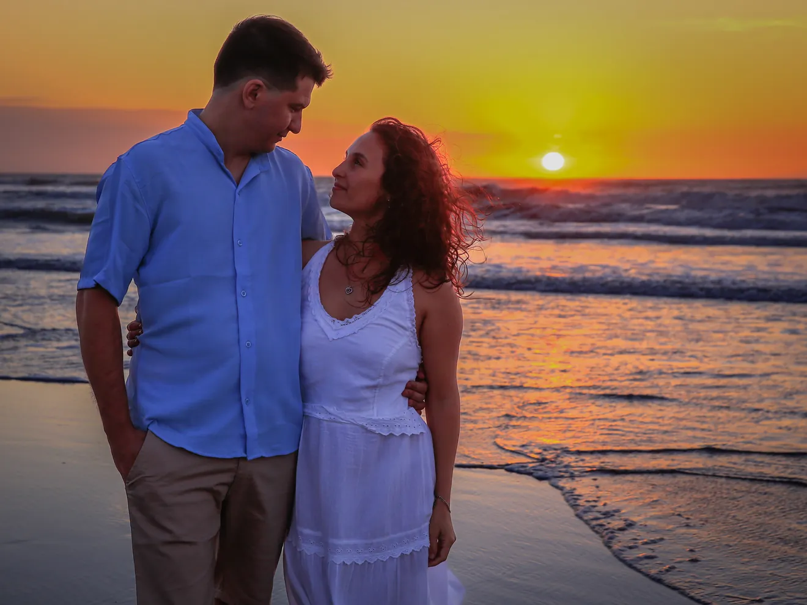
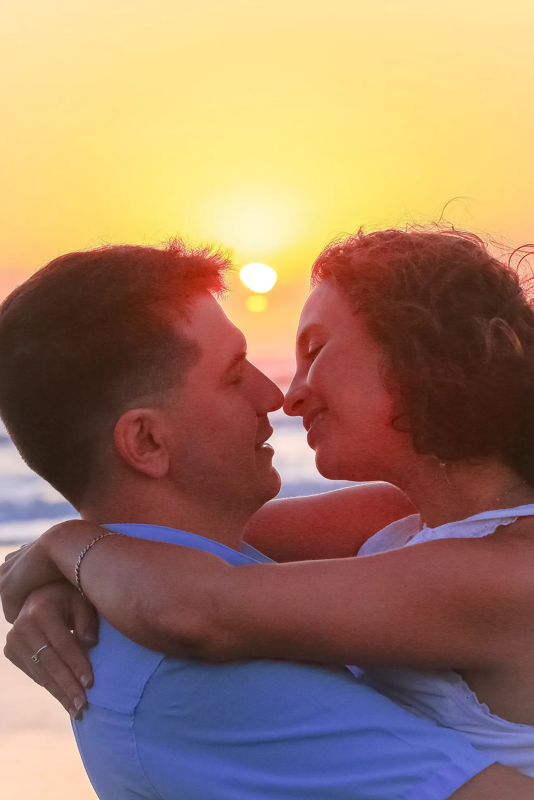
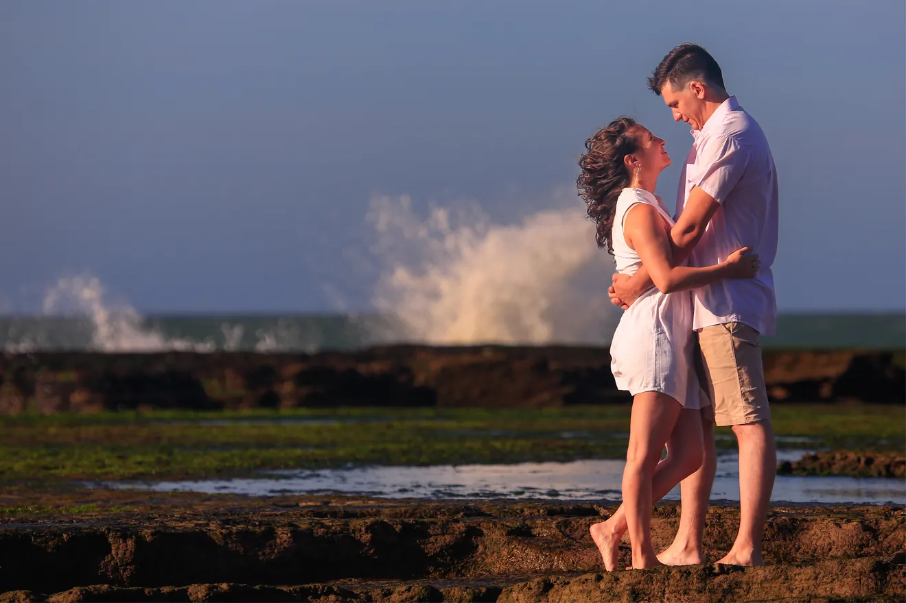
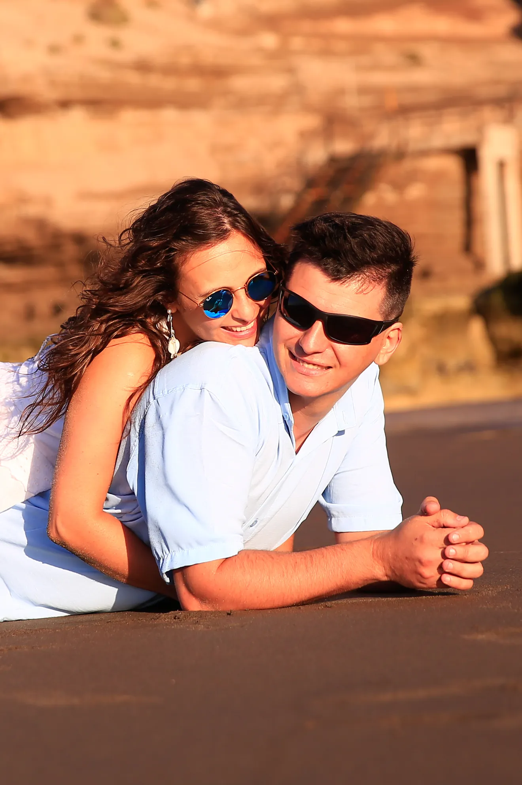
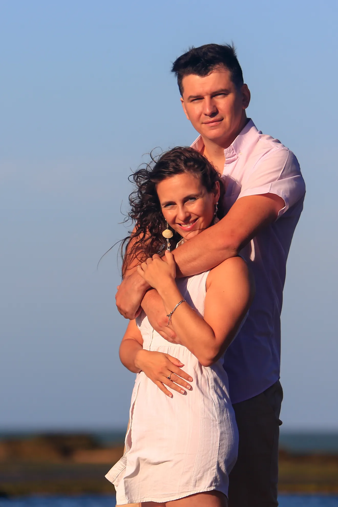
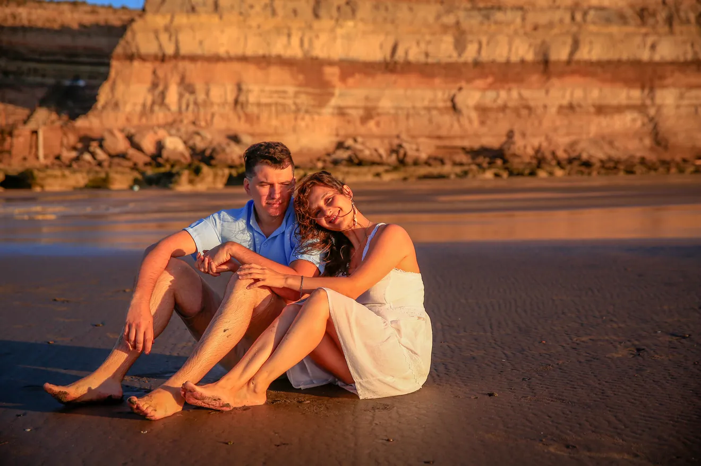
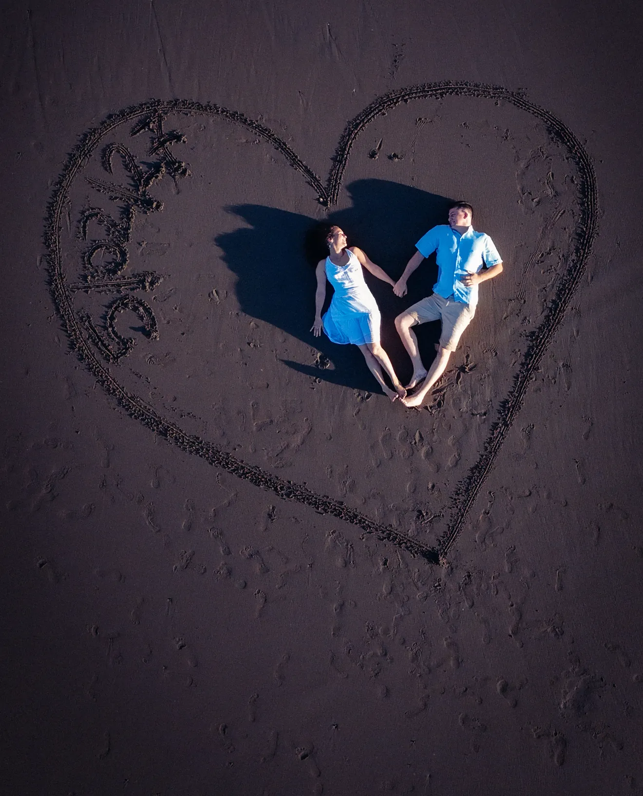
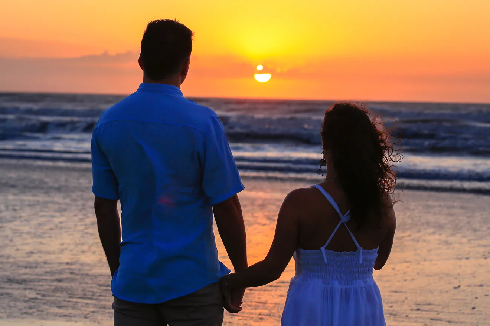
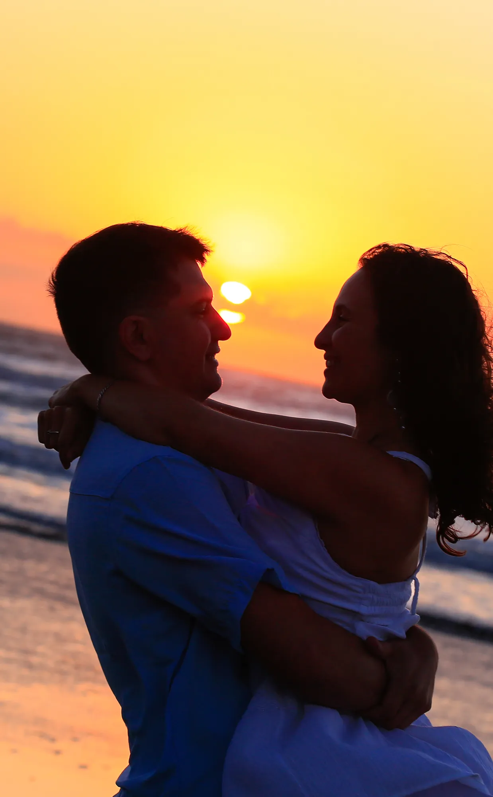
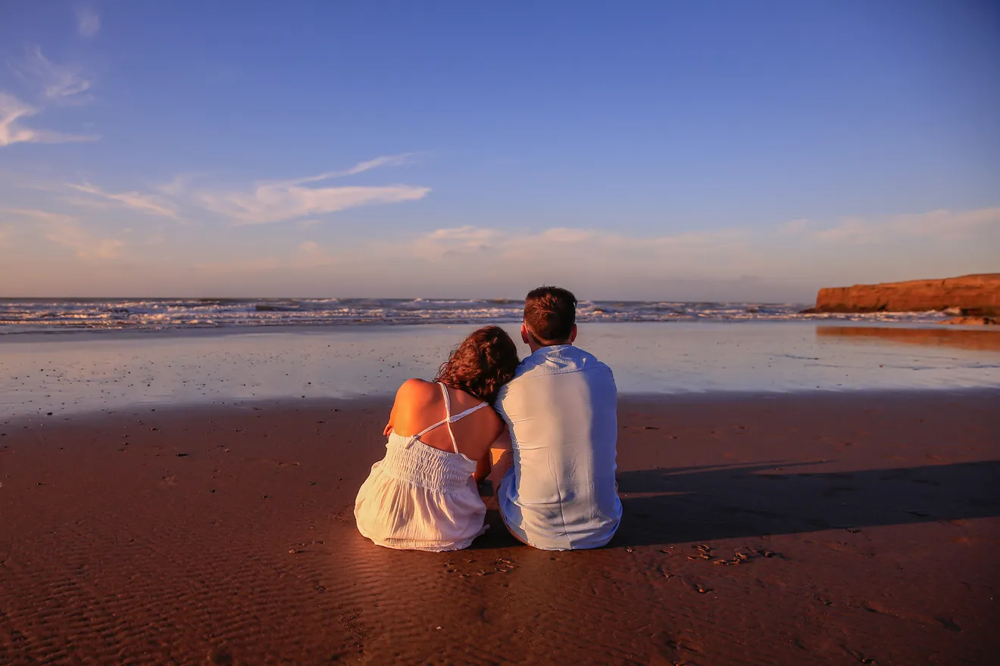

Jue04feb
Ceremonia civil
Álvaro Barros 524, Viedma
Todo comenzó con un click. Literal.

Nos encontramos sin buscarlo en un sitio web. Dos locos por la pesca y por viciar en la compu hicieron match al instante, y desde entonces los mensajes no cesaban hasta las seis de la mañana.
Nos acompañaron noches de insomnio, días llenos de ansiedad, tardes deseando vernos y noches llenas de expectativas. No sabíamos que detrás de esa pantalla venía la persona con la que íbamos a bancarnos todo.
No fue fácil: pasamos tormentas, vimos al sol salir, combatimos mareas bravas y días para tirar la caña. Pero elegimos quedarnos una y otra vez, el uno para el otro.

Hoy esa conexión que empezó online la firmamos acá, en persona, y para siempre.

Que juntos cumplamos más sueños que años

Son libres de escoger el color que deseen para su atuendo. Solo les pedimos amablemente evitar el blanco, el albaricoque y el azul neblina.

Nos encantaría saber si vas a estar. Escribinos por WhatsApp y listo.
Confirmar por WhatsAppConfirmá antes del 13 de enero de 2027

A nuestro viaje juntos le quedan muchas millas por recorrer… ¿Nos ayudás a lograrlo? Acá te dejamos por dónde.
Alias · Mercado Pago
viaje.juntos.boda.mj
Cuándo y dónde
Jue04feb
Ceremonia civil
Álvaro Barros 524, Viedma
Vie05feb
21:00 h · Catedral Nuestra Señora de la Merced
Irigoyen 27, Viedma, Río Negro
Catedral Nuestra Señora de la Merced
Irigoyen 27, Viedma
Vie05feb
Salón Costa Eventos
Ruta Provincial 1, km 12,5

Agendar la fecha
En tus ojos veo mi futuro y en tus brazos encuentro mi hogar

